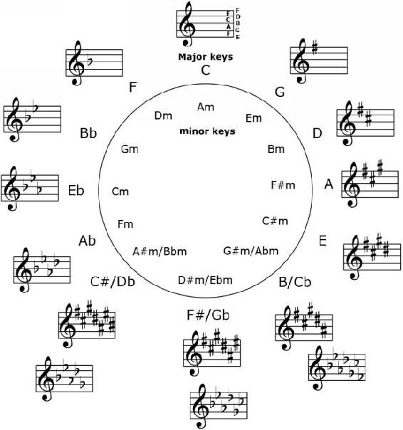

The circle of fifths is a simple tool with a wide range of important uses. At its most basic, it consists of a circle with each note written (beginning at C) so that as the circle is followed clockwise the notes ascend by an interval of Perfect Fifth each time. That means that the notes, clockwise, of the circle of fifths are: C, G, D, A, E, B, F#/Gb, C#/Db, G#/Ab, D#/Eb, A#/Bb, F, C.
Before going on it’s important to make something clear right away—there is a rule in music theory which says that there can’t be two side by side notes with the same alphabet. The consequence of this is that when applying the Major scale formula to a key (tone, tone, semitone, tone, tone, tone, semitone) and writing out the scale notes we will get some keys with sharps and some with flats.
For example, F major scale contains the notes: F - T - G - T - A - S - A# - T - C - T - D - T - E - S - F.
Now this was intentionally written wrong. You see that A and A#? Because of the rule mentioned above we would have to write Bb, instead of A# (which are the same tone, just written differently).
So the F key notes actually look like this: F - T - G - T - A - S - Bb - T - C - T - D - T - E - S - F. Because of this F is a flat key; in the same way some keys are either sharp or flat (except for the key of C which doesn’t have any).
In any case, moving through the notes by an interval of 5th allows us to organize information about each key:
1) First, each note is understood to represent a major key starting with C, and a relative minor key is placed by each major key: A minor, E minor, B minor, F#/Gb minor, C#/Db minor, G#/Ab minor, D#/Eb minor, A#/Bb minor, Fm, Cm, Gm, Dm, Am (in that order, beginning with Am being matched to C and following from there).
2) Second, each key is written in terms of how many sharps or flats it has: C has 0 sharps, G has 1 sharp, D has 2 sharps, A has 3 sharps, E has 4 sharps, B has 5 sharps, F#/Gb has 6 sharps or 6 flats (it can be written either way), Db has 5 flats, Ab has 4 flats, Eb has 3 flats, Bb has 2 flats, F has 1 flat. In this way, it is easy to see the arrangement of sharps and flats for each key.

Figure 3.2.1. The Circle of fifths shown lays out each key with its key signature written next to it. Note that whenever you’re moving clockwise on the circle (increasing in pitch) sharps are used, and whenever you’re moving counter-clockwise on the circle (decreasing in pitch) flats are used.
As the number of sharps or flats increases, the key with more alterations contains all of the same alterations as the last one, only one new one is added. The order in which the alterations to a staff in a key signature are written is also determined by the circle of fifths—G has 1 sharp: F#, and so the F line is sharped in the key signature; following that, D is written first with the F sharped and then with the C sharped; following that, A is written first by sharping the F, then by sharping the C, and finally by sharping the G; and so on. The same logic applies to the flat keys and to the minor keys as well.